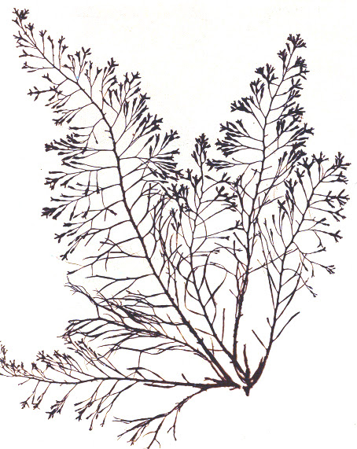
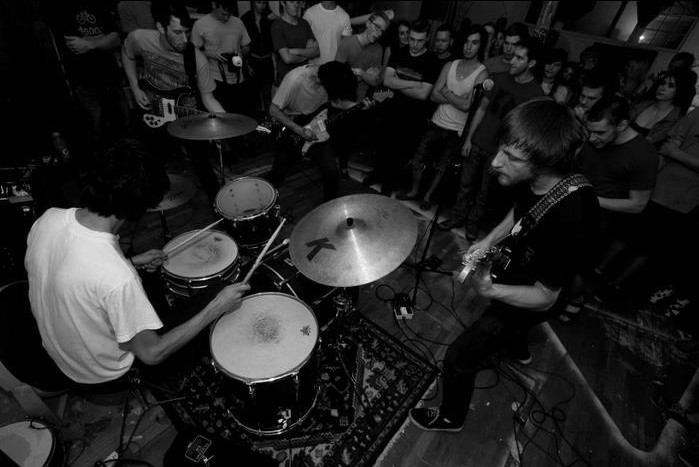

est. 2013 easton & redding ct
news
bio
shows
contact
NEWS
You can now preorder our cassette
here
"Rocks" streaming now! Thanks Impose!
CHECK IT OUT
BIO

"We changed the name from Suns to Poverty Hollow because I started Suns when I was 15 in 2008 and so many changes have happened to the bands sound and lineup since then. Over the past 2 years, we've solidified our lineup and found our own sound, so we wanted our band name to reflect that to us. The song 'Rocks' was actually the first song we wrote after deciding to change our name. Typically, I will write a song, and then we will almost re-write it at a practice, but sometimes I will write a song, and it just feels right to keep it as straightforward as it is without re-writing or re-arranging much. This EP features both types of those songs, displays how dynamic of a band we are, and shows how varied our sound is." - Will Rutledge
SHOWS
July 27 - Brooklyn, NY @ Death By Audio w/Butter the Children, Flagland
July 28 - New Brunswick, NJ @ Cooler Ranch House w/Ovlov, Honeydrum, Treatment
July 29 - Bethlehem, PA @ Secret Art Space w/Ovlov, Literature, Wildhoney, Television Blood
July 30 - Philadelphia, PA @ Nacho House w/Ovlov, The Eeries, Rozwell Kid
July 1 - Danbury, CT @ Heirloom Arts Theater w/Ovlov,
July 2 - Albany, NY @ Shred House w/Ovlov, Junior Bob, White Savages, Langosta, Ourselves
July 3 - Northampton, MA @ TBA w/Ovlov, Pachangacha, Ghost Blood
July 20 - Boston, MA @ JP Drive-In w/ Donovan Wolfington, Sneeze, Maura
July 21 - New Haven, CT @ Bethesda Lutheran Church w/ Donovan Wolfington, The World is..., Dads, Pity Sex
July 22 - Montclair, NJ @ The Meatlocker w/ Donovan Wolfington, Toasted Plastic
July 23 - Brooklyn, NY @ Big Snow Buffalo Lodge W/ Donovan Wolfington TOONS & Frankie Cosmos
July 24 - New Haven, CT @ Fort Flesh w/ Ovlov, Donovan Wolfington
July 25 - Possibly Providence, RI @ TBA, W/ Donovan Wolfington